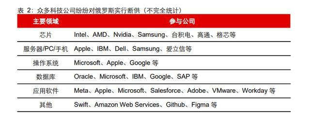
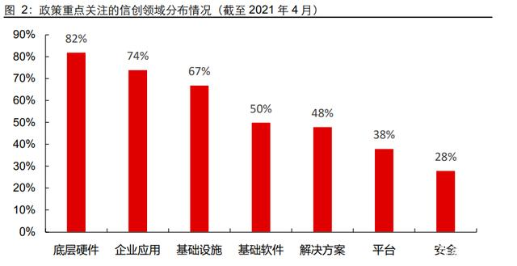
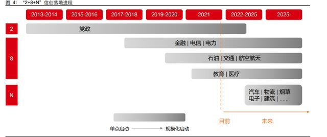

信创行业深度报告：行而不辍，未来可期
信创势不可挡，“2+8+N”递次推进
自主可控势在必行，政策助力高速发展
在信息安全问题频发、美国遏制中国科技发展以及俄乌冲突的时代背景下，我国信创产 业的发展已刻不容缓。 信息安全：多年来，我国 IT 产业主要聚焦于社交、电商、在线视频等上层应用领域， 先后发展出了 BAT、美团、字节跳动等知名科技公司。而在 CPU、GPU、服务器、操 作系统、数据库、中间件等底层 IT 领域，我国主要奉行“造不如买”的发展模式，产 业基础相对薄弱，Intel、AMD、Qualcomm、Nvidia、Apple、Microsoft、Oracle、IBM 等国际巨头在我国占据了主要的市场份额。近年来，由 IT 基础设施引发的信息安全问 题频频发生，微软黑屏门、棱镜门、苹果后门、Intel 芯片漏洞、苹果 Siri 监听门等事件 警醒了人们对网络安全的高度重视，我国 IT 产业的自主可控正势在必行。
美国遏制中国科技发展。自 2017 年以来，美国持续加大对中国科技产业的制裁力度， 具体包括：建立出口管制实体企业名单，先后将华为、海光信息、新华三以及天津飞腾 等数百家中国高科技企业列入其中；针对通信设备、集成电路、新能源汽车等领域的知 识产权保护和技术转让，多次发动“301 调查”；严格审查中国企业对美企技术的并购 活动，比如在半导体和信息通信领域封杀 9 个并购项目，包括华芯收购美国半导体测试 公司等。过去，中国由于在芯片、操作系统、数据库等 IT 领域主要秉承“造不如买” 的发展模式，始终缺乏底层核心技术，随着中美科技博弈的持续升级，该模式显然难以 为继。为避免美国对中国的科技掣肘，我国亟需突破芯片、操作系统、数据库、工业软 件等卡脖子的关键环节。
俄乌冲突引发地缘政治担忧，西方国家对俄多方科技制裁。2022 年俄乌冲突爆发后， 以美国为首的西方国家持续升级对俄罗斯的制裁力度，涉及科技、金融、经贸、体育、 网络舆论、能源、学术等多个领域。以科技领域为例，政府层面，美国联合西方各国对 俄展开高科技产品禁运，同时美国政府还考虑实施“次级制裁”，即惩罚向俄罗斯出口 高科技产品的第三方企业。企业层面，Intel、AMD、Apple、台积电、Dell、Microsoft、 SAP、Oracle、IBM、Meta 等 IT 厂商也陆续停止对俄罗斯的产品供应。尽管俄罗斯早 在 2013 年便开始推动关键软硬件的国产化开发，在芯片、操作系统等领域也形成了部 分替代方案，但对于部分尖端技术仍然存在卡脖子的难题，比如军工系统所需要的先进 芯片、IOT 与特殊材料等。虽然我国与俄罗斯国情存在较大不同，但从竞争维度看，未 来不排除美国对中国全面制裁可能性，任何无法保证自主可控的关键领域都可能成为制 裁重点，此次西方国家对俄制裁再次为我们敲响警钟，充分警醒了我国实现科技产业国 产化的必要性与紧迫性，同样也是我们很好的学习和提前预防的案例。

在持续的政策支持下，国产软硬件已从“不可用”迈入“可用”，正逐步越来越“好用”。 自 2006 年“核高基”专项以来，半导体、操作系统、数据库等科技产业一直是我国需要攻坚的关键领域，我国也先后出台了《国家信息化发展战略纲要》、《关于新时期促 进集成电路产业和软件产业高质量发展若干政策的通知》等多项政策文件，涵盖财税、 投融资、人才以及进出口等不同方面的支持。经过数十年的政策支持，中国软硬件产业 已实现从“不可用”到“可用”的巨大跨越，当前正逐步迈向“好用”阶段。 进入 2021 年后，科技自立自强进一步上升为国家战略。2021 年 3 月，“十四五”规划 和 2035 远景目标纲要提出，要把科技自立自强作为国家发展的战略支撑，在事关国家 安全和发展全局的基础核心领域（人工智能、量子信息、集成电路等），加快制定战略 科学计划和科学工程。为深化“十四五”规划对信创产业的支持，2021 年 11 月 30 日， 工信部连续发布了《“十四五”信息化和工业化深度融合发展规划》、《“十四五”软 件和信息技术服务业发展规划》，提出我国将加快补齐关键技术短板，重点强化自主基 础软硬件的底层支撑能力，突破核心电子元器件、基础软件等核心技术瓶颈，加快数字 产业化进程。
分行业看，据海比研究院统计，截至 2021 年 4 月，底层硬件（服务器、整机、芯片） 是国家最为关注的领域，政策扶持力度最大。其次为企业应用（办公软件、工业软件、 企业服务软件）、基础设施（5G 基站、数据存储中心、超算中心）和基础软件（操作 系统、数据库、中间件）等，同样也是国家政策的重点支持方向。

信创产品批量落地，“2+8+N”递次推广
信创产业主要包括基础硬件、基础软件、应用软件、信息安全四大板块。信创产业，即 信息技术应用创新产业，与“863 计划”“973 计划”“核高基”等一脉相承，旨在实 现我国 IT 产业的自主可控、安全可靠。 信创产业先后历经觉醒、预研起步、加速发展、试点实践，现已迈入应用落地阶段。1986 年，“863 计划”推出，正式拉开我国信创产业的发展序幕。1993-2019 年，信创产业 的发展历程包括预研起步、加速发展以及试点实践三大阶段。到 2020 年，信创行业进 入新的发展“元年”，开始全面爆发，呈现出市场活跃、业绩增长、标杆项目频出等特点。 经过 2020 年的铺垫，2021 年信创产业正式迈入应用落地阶段，推进力度从小范围试点 转变为大信创，进而贡献更大的市场规模。相关厂商在深耕党政军领域的同时，也在金 融、电信、电力、交通等重要行业积极推动信创产品的规模化落地。
目前信创产业的落地节奏呈现“2+8+N”的发展态势。作为信创起步最早的领域，党政 部门在 2013 年便从电子公文系统开始信创起步试点，当前党政市级以上公文系统的信 创改造已经进入收尾阶段，而后有望进一步纵向下沉至区县乡镇，横向拓展电子政务系 统改造。在党政部门的引领下，金融、电信、电力、交通等八大重点行业也开始加快自 主可控步伐。行业信创中，金融行业推进最快，紧跟党政部门的步伐，共处第一梯队。 然后是电信、交通、电力、石油、航空航天行业，位列第二梯队；最后是教育、医疗行 业，信创渗透率最低，同处第三梯队。“2+8”体系之外，汽车、物流、烟草、电子等 N 个行业有望在 2023 年左右开始发力国产替代。

在“2+8+N”体系中，党政与金融行业同处第一梯队，二者落地速度最快，引领着其他 信创领域的发展。 电子公文目前在部委省市级改造已经接近尾声，未来区县乡级与电子政务有望持续放量。 党政系统中，电子公文系统的功能要求、技术难度相对较低，所以电子公文是国产替代 的第一步。2013 年底，中央办公厅、国务院办公厅、工信部牵头启动“党政电子公文系 统”升级试点，正式拉开了党政信创的发展序幕。经过前期的试点工作，信创产品的可 靠性和可用性提升显著。展望未来，电子公文系统有望进一步向区县级下沉，同时电子 政务系统的国产替代也将有序推进，二者有望贡献更大的市场规模。
金融信创正逐步由单点试点尝试扩大至行业大规模试点应用。作为国家安全的重要组成 部分，金融行业的信创发展起步较早，叠加较强的 IT 自研能力，其渗透率位列八大重 点行业之首，仅次于党政部门。相较于党政部门，金融信创的主体均为市场化机构，对 产品的性能、稳定性、适配性要求更高，因而主要秉承由易到难的发展路线，先单点试 点尝试而后扩大至行业大规模试点应用。2020 年以前，金融信创的代表性事件主要包 括浪潮天梭 K1 小型机正式上市、邮储银行与百信银行的去“IOE”化、银监会与人民 银行加码信创政策等，行业整体处于单点试点尝试阶段。进入 2020 年，金融行业一期 试点启动，试点机构为 47 家，2021 年再次开启二期试点，试点机构扩容至 198 家，并 要求 OA、邮件系统替换成全栈信创产品。可见，目前金融信创正逐步跨入大规模试点 应用阶段。